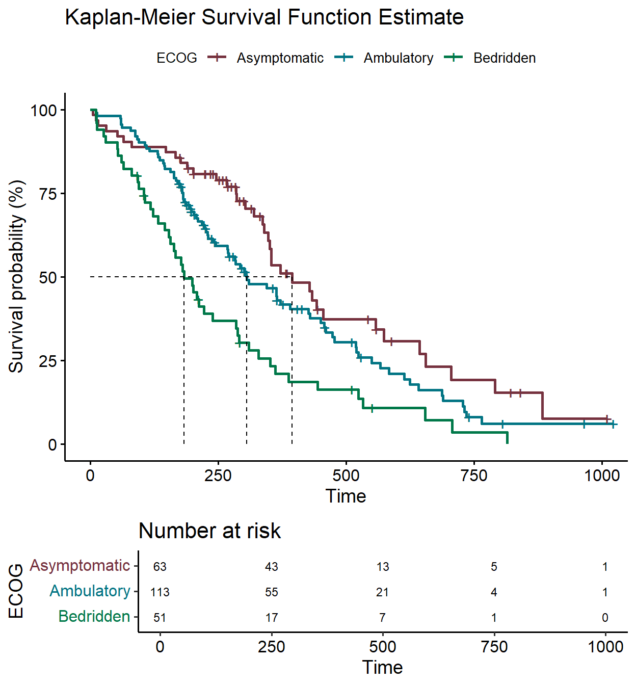
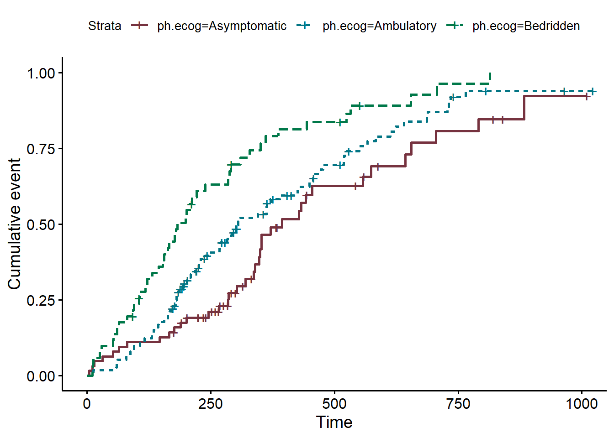
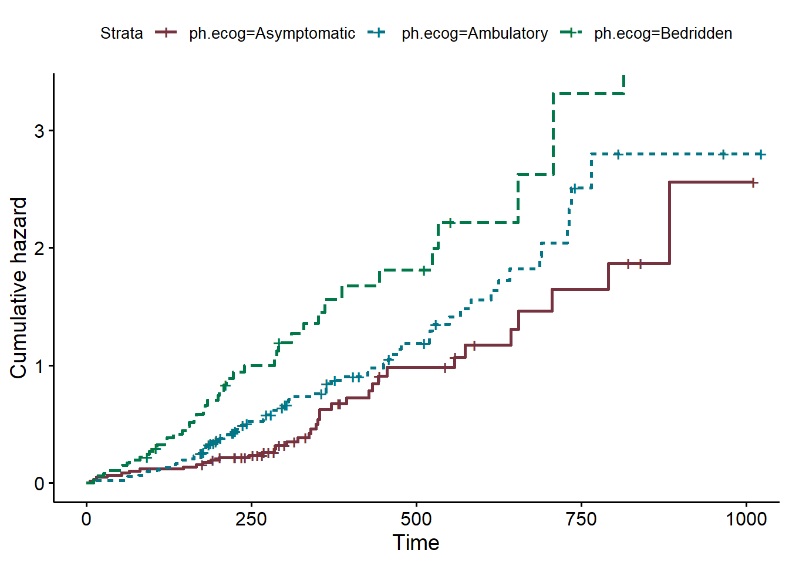

library(tidyverse)
library(survival)
library(survminer)
library(gtsummary)
library(gt)
library(scales)
library(glue)
library(ggiraph)2 Kaplan-Meier
Survival data are generally described and modeled in terms of the survivor function and the hazard function. The survivor function \(S(t)\) is the probability of surviving to some time beyond t and is usually estimated by the Kaplan-Meier (KM) method. The log-rank test is then used to test for differences between survival curves for treatment groups. The hazard function \(h(t)\) is the instantaneous event rate at t given survival up to t. It is primarily used as a diagnostic tool. KM analyses are limited, however, because they cannot adjust for subject-related confounding variables. Adjust for covariates with multivariate survival analyses such as the parametric and semi-parametric models (Clark 2003).
The KM estimator for the survival function is the product over failure times of the conditional probabilities of surviving to the next failure time.
\[\hat{S}(t) = \prod_{i: t_i < t}{\frac{n_i - d_i}{n_i}} \tag{2.1}\]
where \(n_i\) is the number of subjects at risk at time \(i\) and \(d_i\) is the number incurring the event. I.e., \(\hat{S}(t)\) is the sum-product of the survival proportions at each time interval, the cumulative survival probability. The KM curve falls only when an event occurs, not when a subject is censored. Confidence limits are calculated using the “delta” method to obtain the variance of \(\log \hat{S}(t)\).1
The KM method is demonstrated here with a case study using the survival::lung data set.
d_lung <-
survival::lung |>
filter(!is.na(ph.ecog)) |>
mutate(
status = factor(
status,
levels = c(1, 2),
labels = c("censored", "died")
),
ph.ecog = factor(
ph.ecog,
levels = c(0, 1, 2, 3, 4),
labels = c(
"Asymptomatic",
"Ambulatory",
"In bed <50%",
"In bed >50%",
"Bedridden"
)
),
ph.ecog = fct_drop(ph.ecog),
ph.ecog = fct_lump_n(ph.ecog, n = 2, other_level = "Bedridden"),
sex = factor(sex, levels = c(1, 2), labels = c("Male", "Female")),
age_bin = cut(age, breaks = c(38, 55, 65, 83)),
patient_id = row_number()
)The study investigated differences in all-cause mortality between men and women diagnosed with advanced lung cancer. 227 participants aged 39 to 82 were monitored up to three years until time of death. The participants were segmented into three groups according to their ECOG performance score: Asymptomatic, symptomatic but completely Ambulatory, and Bedridden at least part of the day. Participants’ age and gender were captured as possible controlling covariates, but will not be used here since KM analyses only compare the distributions among levels of a single factor. Table 2.1 presents the summary statistics.
Show the code
t1 <- d_lung |>
tbl_summary(by = "ph.ecog", include = c(time, status, ph.ecog, age, sex)) |>
add_overall()
as_gt(t1) |>
gt::tab_caption("d_lung summary statistics")| Characteristic | Overall N = 2271 |
Asymptomatic N = 631 |
Ambulatory N = 1131 |
Bedridden N = 511 |
|---|---|---|---|---|
| time | 259 (167, 404) | 303 (224, 442) | 243 (177, 426) | 180 (95, 310) |
| status | ||||
| censored | 63 (28%) | 26 (41%) | 31 (27%) | 6 (12%) |
| died | 164 (72%) | 37 (59%) | 82 (73%) | 45 (88%) |
| age | 63 (56, 69) | 61 (56, 68) | 63 (55, 68) | 68 (60, 73) |
| sex | ||||
| Male | 137 (60%) | 36 (57%) | 71 (63%) | 30 (59%) |
| Female | 90 (40%) | 27 (43%) | 42 (37%) | 21 (41%) |
| 1 Median (Q1, Q3); n (%) | ||||
2.1 Assumptions
You can run a KM analysis for processes that have a binary outcome (e.g., dead vs alive), a precise event time (number rather than an interval), minimal left censoring (unknown starting times), and independent censoring (independent of the event).2
Two assumptions underlie the KM procedure:
- No Cohort Effects. There are no secular trends. E.g., staggered starting times may encompass the introduction of new therapies which affect survival. Test for cohort effects by running KM tests for multiple time intervals. You only need to test for this if there is reason to believe effects may be present.
- Similar Censorship Patterns. The amount and pattern of censoring should be similar. Censorship patterns can be tested by inspection.
Cohort effects should not apply in a study lasting less than 3 years, so that assumption is not tested in this case study.
The participant censoring plot shows censored cases were equally spread over time and not too dissimilar for the Asymptomatic and Ambulatory groups, but the Bedridden group had a low number of censoring events (Figure 2.1). Censored cases were negatively associated with symptom severity, Asymptomatic, 26 (41%), Ambulatory, 31 (27%), and Bedridden, 6 (12%) study groups.3
Show the code
d_lung |>
filter(status == "censored") |>
ggplot(aes(x = time, y = fct_rev(ph.ecog))) +
geom_point() +
theme_light() +
labs(title = "Participant Censoring", x = "Time (days)", y = NULL)2.2 Fitting the Model
Calculate \(\hat{S}(t)\) with survival::survfit(). survfit() operates on a Surv object, created by survival::Surv(). Explanatory variables can be defined as factors, but the event indicator, status, must be numeric or boolean, coded as 0|1, 1|2, or FALSE|TRUE.4 survfit() creates survival curves from a formula or from a previously fitted Cox model. If the confidence interval crosses zero, specify the log-log transformation parameter conf.type = "log-log" (this one doesn’t need it).
(km_fit <- survfit(Surv(time, status == "died") ~ ph.ecog, data = d_lung))Call: survfit(formula = Surv(time, status == "died") ~ ph.ecog, data = d_lung)
n events median 0.95LCL 0.95UCL
ph.ecog=Asymptomatic 63 37 394 348 574
ph.ecog=Ambulatory 113 82 306 268 429
ph.ecog=Bedridden 51 45 183 153 28837 of the 63 Asymptomatic subjects died, 82 of the 113 Ambulatory subjects died, and 45 of the 51 Bedridden subjects died. gtsummary::tbl_survfit() presents a similar summary in a formatted table. Table 2.2 additionally presents the effects of sex and age.
(km_gt <- gtsummary::tbl_survfit(
list(
survfit(Surv(time, status == "died") ~ 1, data = d_lung),
survfit(Surv(time, status == "died") ~ ph.ecog, data = d_lung),
survfit(Surv(time, status == "died") ~ sex, data = d_lung),
survfit(Surv(time, status == "died") ~ age_bin, data = d_lung)
),
probs = 0.5,
label_header = "**Median Survival**"
))| Characteristic | Median Survival |
|---|---|
| Overall | 310 (285, 363) |
| ph.ecog | |
| Asymptomatic | 394 (348, 574) |
| Ambulatory | 306 (268, 429) |
| Bedridden | 183 (153, 288) |
| sex | |
| Male | 270 (218, 320) |
| Female | 426 (348, 550) |
| age_bin | |
| 38,55] | 320 (226, 533) |
| 55,65] | 348 (285, 477) |
| 65,83] | 301 (267, 361) |
Values are median with 95% CI. Asymptomatic participants had a median survival time of 394 (348, 574) days. This was longer than the Ambulatory group, 306 (268, 429) days, and Bedridden group, 183 (153, 288) days. Lower levels of ECOG appear to have a protective effect, but whether it is statistically significant requires a formal statistical test.
Extract values for reporting with gtsummary::inline_text() (as was done above), or create a summary object. The table attribute of the summary object is a named numeric matrix. E.g., get Asymptomatic events with km_smry$table["ph.ecog=Asymptomatic", "events"].
km_smry <- summary(km_fit)
# Example: Asymptomatic median survival time.
km_smry$table["ph.ecog=Asymptomatic", "median"]
## [1] 394You can also use summary() with the time parameter to estimate survival up until a point in time.
summary(km_fit, time = 500)Call: survfit(formula = Surv(time, status == "died") ~ ph.ecog, data = d_lung)
ph.ecog=Asymptomatic
time n.risk n.event survival std.err lower 95% CI
500.0000 13.0000 30.0000 0.3745 0.0751 0.2528
upper 95% CI
0.5548
ph.ecog=Ambulatory
time n.risk n.event survival std.err lower 95% CI
500.0000 21.0000 67.0000 0.3054 0.0505 0.2209
upper 95% CI
0.4223
ph.ecog=Bedridden
time n.risk n.event survival std.err lower 95% CI
500.0000 7.0000 40.0000 0.1635 0.0552 0.0844
upper 95% CI
0.3169 gtsummary::tbl_survfit() does something similar.
gtsummary::tbl_survfit(km_fit, times = 500)| Characteristic | Time 500 |
|---|---|
| ph.ecog | |
| Asymptomatic | 37% (25%, 55%) |
| Ambulatory | 31% (22%, 42%) |
| Bedridden | 16% (8.4%, 32%) |
broom::tidy() summarizes the data by each event time. At time t = 5, 1 of the 63 Asymptomatic ECOG at risk died, so \(S(5) = 1 - \frac{1}{63} = .9841\). At t = 11, 1 of the 62 that remained died, so \(S(11) = S(5) \cdot \frac{1}{62} = .9841 \cdot .9839 = .9683\), and so on. This is the support for the survival curves.
broom::tidy(km_fit)# A tibble: 216 × 9
time n.risk n.event n.censor estimate std.error conf.high conf.low strata
<dbl> <dbl> <dbl> <dbl> <dbl> <dbl> <dbl> <dbl> <chr>
1 5 63 1 0 0.984 0.0160 1 0.954 ph.ecog=…
2 11 62 1 0 0.968 0.0228 1 0.926 ph.ecog=…
3 15 61 1 0 0.952 0.0282 1 0.901 ph.ecog=…
4 31 60 1 0 0.937 0.0328 0.999 0.878 ph.ecog=…
5 53 59 1 0 0.921 0.0370 0.990 0.856 ph.ecog=…
6 65 58 1 0 0.905 0.0409 0.980 0.835 ph.ecog=…
7 81 57 1 0 0.889 0.0445 0.970 0.815 ph.ecog=…
8 147 56 1 0 0.873 0.0480 0.959 0.795 ph.ecog=…
9 166 55 1 0 0.857 0.0514 0.948 0.775 ph.ecog=…
10 175 54 0 1 0.857 0.0514 0.948 0.775 ph.ecog=…
# ℹ 206 more rowsThe KM plot in Figure 2.2 gives you a better feel for the data. Vertical drops indicate events and vertical ticks indicate censoring. Cumulative survival is negatively associated with the ECOG performance score. There is no substantial crossing of the survival curves that would affect the power of the statistical tests. The curves are similarly shaped. The log-rank test is ideal for similarly shaped distributions and distributions that do not cross. The Breslow, and Tarone-Ware tests are more sensitive alternatives.
Note
survminer does a good job plotting KM models and includes a risk table. But you can do just as good of a job with ggplot and control more of the output. Figure 2.3 combines ggplot with giraph for a full risk table in the tooltips.
Show the code
ggsurvplot(
km_fit,
data = d_lung,
fun = "pct",
risk.table = TRUE,
fontsize = 3, # used in risk table
surv.median.line = "hv", # median horizontal and vertical ref lines
ggtheme = theme_light(),
palette = c("goldenrod", "sienna", "tomato"),
title = "Kaplan-Meier Survival Function Estimate",
legend.title = "ECOG",
legend.labs = levels(d_lung$ph.ecog)
)

Show the code
med <-
broom::tidy(km_fit) |>
filter(estimate < .5) |>
slice_max(estimate, by = strata) |>
mutate(strata = str_remove(strata, "ph.ecog="))
p <-
broom::tidy(km_fit) |>
mutate(
strata = str_remove(strata, "ph.ecog="),
tt = glue("{strata}\n\nTime: {time}\nAt risk: {n.risk}\nEst.: ",
"{percent(estimate, .1)}")
) |>
ggplot(aes(x = time, y = estimate, color = strata)) +
geom_step() +
geom_segment(
data = med,
aes(x = 0, xend = time, y = .5, yend = .5),
linetype = 2
) +
geom_segment(
data = med,
aes(x = time, xend = time, y = 0, yend = .5),
linetype = 2
) +
geom_point_interactive(aes(tooltip = tt)) +
scale_color_manual(values = my_palette$warm) +
scale_y_continuous(labels = percent_format(1)) +
labs(
x = "time (days)", y = "Survival probability", color = NULL,
title = "Kaplan-Meier Survival Function Estimate"
)
girafe(ggobj = p)ggsurvplot() can also plot the cumulative risk function, \(F(t) = 1 - S(t)\), with parameter fun = "event" (Figure 2.4), and the cumulative hazard function, \(H(t) = -\log S(t)\), with parameter fun = "cumhaz" (Figure 2.5).
Show the code
ggsurvplot(
km_fit,
data = d_lung,
fun = "event",
linetype = "strata", # Change line type by groups
pval = FALSE,
conf.int = FALSE,
palette = my_palette$warm,
title = "Cumulative Risk"
)

Show the code
ggsurvplot(
km_fit,
data = d_lung,
fun = "cumhaz",
linetype = "strata", # Change line type by groups
pval = FALSE,
conf.int = FALSE,
palette = my_palette$warm,
title = "Cumulative Hazard"
)

2.3 Interpreting Results
Determine whether there are significant differences in the fitted survival distributions using a log-rank test (and/or Breslow and Tarone-Ware test). If there are differences, run a pairwise comparison post-hoc test to determine which curves differ.
The log-rank test weights the difference at each time point equally. Compared to Breslow and Tarone-Ware, it places greater emphasis on differences at later rather than earlier time points. The Breslow test (aka generalized Wilcoxon or Gehan) weights the differences by the number at risk at each time point. The effect is to place greater weight on the differences at earlier time points. The Tarone-Ware test weights differences the same way as Breslow, but takes the square root of the number at risk.
(km_diff <- survdiff(Surv(time, status == "died") ~ ph.ecog, data = d_lung))Call:
survdiff(formula = Surv(time, status == "died") ~ ph.ecog, data = d_lung)
N Observed Expected (O-E)^2/E (O-E)^2/V
ph.ecog=Asymptomatic 63 37 54.2 5.4331 8.2119
ph.ecog=Ambulatory 113 82 83.5 0.0279 0.0573
ph.ecog=Bedridden 51 45 26.3 13.2582 15.9641
Chisq= 19 on 2 degrees of freedom, p= 8e-05 The survival distributions for the three interventions were statistically significantly different, \(\chi^2\)(2) = 19.0, p < .001.
Breslow and Tarone-Ware are in the coin package.
coin::logrank_test(Surv(time, status == "died") ~ ph.ecog, data = d_lung, type = "Tarone-Ware")
Asymptotic K-Sample Tarone-Ware Test
data: Surv(time, status == "died") by
ph.ecog (Asymptomatic, Ambulatory, Bedridden)
chi-squared = 19.009, df = 2, p-value = 7.451e-05coin::logrank_test(Surv(time, status == "died") ~ ph.ecog, data = d_lung, type = "Gehan-Breslow")
Asymptotic K-Sample Gehan-Breslow Test
data: Surv(time, status == "died") by
ph.ecog (Asymptomatic, Ambulatory, Bedridden)
chi-squared = 19.431, df = 2, p-value = 6.034e-05Three tests produced identical conclusions. The log rank test is an omnibus test. Create a pairwise comparisons table to see which groups differed.
(km_pairwise <- survminer::pairwise_survdiff(Surv(time, status == "died") ~ ph.ecog, data = d_lung))
Pairwise comparisons using Log-Rank test
data: d_lung and ph.ecog
Asymptomatic Ambulatory
Ambulatory 0.0630 -
Bedridden 9e-05 0.0039
P value adjustment method: BH Adjust the statistical significance to compensate for making multiple comparisons with a Bonferroni correction. There are three comparisons so divide .05 by 3, so the significance threshold is p < .0167. There was a statistically significant difference in survival distributions for Asymptomatic vs Bedridden, p < .001, and Ambulatory vs Bedridden, p = 0.004, but not for Asymptomatic vs Ambulatory, p = 0.063.
2.4 Reporting
The guidelines for reporting the Kaplan-Meier test are from Laerd’s Kaplan-Meier using SPSS Statistics (Laerd 2015). Report the results like this.
227 Men and women diagnosed with advanced lung cancer aged 39 to 82 were monitored up to three years until time of death. Participants were classified into three groups according to their ECOG performance score: asymptomatic (n = 63), symptomatic but completely ambulatory (n = 113), and bedridden at least part of the day (n = 51). A Kaplan-Meier survival analysis (Kaplan & Meier, 1958) was conducted to compare survival times among the three ECOG performance scores. Censored cases were negatively associated with symptom severity, asymptomatic, 26 (41%), symptomatic but completely ambulatory, 31 (27%), and bedridden, 6 (12%) study groups. Participants that were asymptomatic had a median survival time of 394 (348, 574) days. This was longer than the ambulatory group, 306 (268, 429) days, and bedridden group, 183 (153, 288) days. A log rank test was run to determine if there were differences in the survival distribution for the different types of intervention. The survival distributions for the three interventions were statistically significantly different, \(\chi^2\)(2) = 19.0, p < .001. Pairwise log rank comparisons were conducted to determine which intervention groups had different survival distributions. A Bonferroni correction was made with statistical significance accepted at the p < .017 level. There was a statistically significant difference in survival distributions for the aymptomatic vs bedridden, p < .001, and ambulatory vs bedridden, p = 0.004, groups. However, the survival distributions for the asymptomatic vs ambulatory group were not statistically significant, p = 0.063
The delta method approximates the variance of a function of an estimator using a Taylor expansion.↩︎
With uninformative censoring, censoring causes are independent of the event. Subjects do not drop out of the study because of something related to their group. E.g., a subject does not drop out of a therapy study because the therapy is making their condition worse.↩︎
Use
gtsummary::inline_text()to summarize (e.g.,gtsummary::inline_text(t1, variable = status, level = "censored", column = "Asymptomatic").↩︎See neat discussion in Note section of
Surv()help file.↩︎